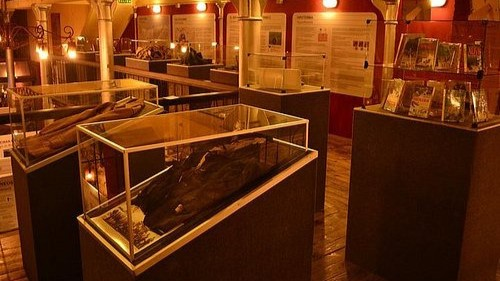
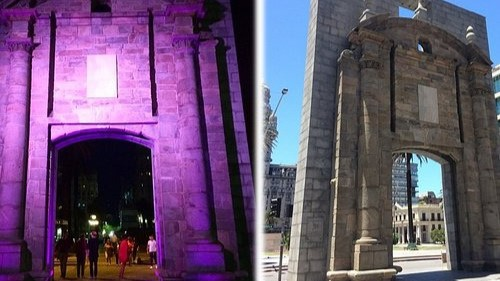
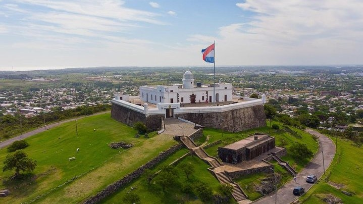
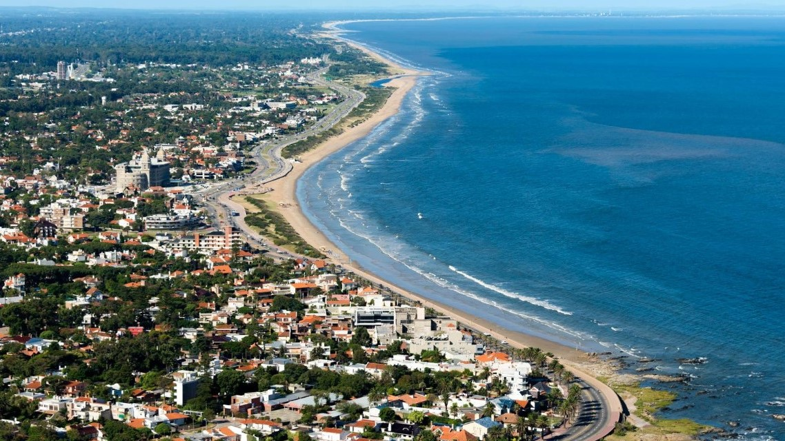

Museu Andes 1972 - Crash Memorial
Visite o Museu dos Andes, em Montevideo, para descobrir a história de um acidente de avião em 1972 nas
montanhas altas. Você verá itens pessoais de alguns dos uruguaios que morreram no acidente, assim como
dos sobreviventes, com informações e vídeos do museu tanto em inglês quanto em espanhol. Reservar
previamente os ingressos para o Museu dos Andes é uma estratégia de economia de tempo que permite a você
cuidar do planejamento com antecedência.

Puerta de la Ciudadela
La Puera de la Ciudadela é um ponto turístico histórico como um porta da cidade. Tem esse lado
emblemático e significativo como identidade de Montevideo, assim, tem seu valor para a História e é como
entrar na cidade velha, caminhar na zona turística nas imediações da Praça da Independência e respirar a
tradição. É um passeio essencial que vale uma boa fotografia, ao lado da porta.

Tour em Montevideo
O passeio é totalmente personalizável, você pode dizer seus interesses e faremos adaptações para
atender às suas necessidades e interesses. É o tour mais abrangente que você encontrará e que recebeu o
Distintivo de Excelência! Esqueça ter que esperar por outros convidados, este é feito apenas para você!

Quando ir a Montevideo – Clima
Tanto Montevideo, como todo o Uruguai tem as estações bem definidas, mas as chuvas são imprevisíveis.
No inverno faz um frio úmido, com temperatura média de 11ºC, e mínima de 5ºC. No verão a temperatura
média é de 21ºC. Porém, no verão se torna mais agradável visitar o país e é possível até aproveitar uma
das praias de água doce do Rio da Prata. Do início de fevereiro até a metade de março rola o carnaval
uruguaio, considerado o mais longo do mundo, com 40 dias de duração.